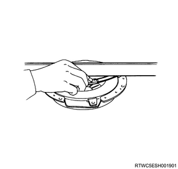

Clutch assembly inspection (MUX)
1. Clutch pressure plate inspection
1. Inspect the clutch pressure plate.
Note
- Visually inspect the clutch pressure plate friction surface for excess worn and heat crack.
- Replace the clutch pressure plate if excess worn or deep heat crack is found.
2. Measure deformation using the gauge.
Note
- Measure the clutch pressure plate friction surface in 4 directions using a straight gauge and filler gauge.
- Replace the clutch pressure plate if any of the measured value exceeds the limit.
Limit： 0.3 mm { 0.012 in }

3. Inspect the clutch cover.
Note
- Visually inspect the entire clutch cover for excess worn, cracks, or other damages.
- Replace the clutch cover if any abnormality is found.
Note
- Visually inspect for worn on the flex surface to the clutch disc, scratch, cracks and worn, loose rivets, worn of the ring.
- For slight scratches, polish it.
- Replace the clutch pressure plate with assembly if excess scratches are found.
2. Clutch pressure plate measurement
1. Measure load using pressure gauge.
Note
- Measure the load of the clutch set.
- Invert the clutch pressure plate.
- Place the metal sheet on the pressure plate.
： 8.3 mm { 0.327 in } Metal sheet thickness
Note
- Compress the clutch pressure plate until the preload reaches the specified value.
Standard： 0 mm { 0 in }
Note
- Record the reading numerical value from the pressure gauge.
Standard： 6860 N { 700 kg / 1542 lb }

- Metal sheet thickness
- Specified value
2. Measure depth using a vernier caliper.
Note
- Measure the depth of the diaphragm spring finger.
- Place a new clutch disc or place spacer under the pressure plate.
- Completely compress the pressure plate and diaphragm spring.
- Compress the pressure plate with a bench press from the top or by tightening with a fixing bolt.
- Tighten the fixing bolt.
Caution
- The preload on the diaphragm spring finger is the following value.
Preload： 49 to 98 N { 5 to 10 kg / 11 to 22 lb } Release direction
Note
- Measure the depth of the spring from the base to the end of spring.
Standard： 50 to 52 mm { 1.97 to 2.05 in }
Note
- When the measured value exceeds the standard value, replace the clutch pressure plate.
- Spacer thickness: 8.3 mm {0.327 in}
- From the base to the end of spring
3. Release bearing assembly inspection
1. Inspect the release bearing assembly.
Note
- Visually inspect the contact surface with the shift fork.
- Replace if the worn or damage is excessive.
2. Apply the grease to the release bearing.
Note
- Apply EXXON MOBILE RONEX MP grease or equivalent to the contact surface with the shift folk.
Caution
- Do not apply grease to the inner surface of the sleeve.

- Grease application
4. Shift fork inspection
1. Inspect the shift fork.
Note
- Visually inspect the contact surface with the release bearing.
- Remove minor step worn or worn using the oil stone.
- Replace if the worn or damage is excessive.
2. Apply the grease to the shift fork.
Note
- Apply EXXON MOBILE RONEX MP grease or equivalent to the inner circumference of the pin hole and thrust surface.
- Grease application
5. Clutch disc inspection
1. Inspect the clutch disc.
Note
- Inspect the torsion spring for looseness, damage or fatigue.
- Replace the clutch disc if any abnormality is found.
- Torsion spring
Note
- Inspect the facing surface for cracks, hardening and adherence of oil.
- Clean or replace the parts when any abnormal condition is detected.
- Facing surface
Note
- Inspect that the clutch disc moves smoothly on the top gear shaft spline of the transmission.
- Remove a minor binding problem with the gear shaft spline by using an oil stone.
6. Clutch disc measurement
1. Install special tool to the clutch disc.
Note
- Insert the clutch pilot aligner in the clutch disc spline hub.
SST: 5-8525-3001-0 - clutch pilot aligner
2. Hold special tool using the working table.
Note
- Hold the clutch pilot aligner in a horizontal direction.
- Set a dial gauge on the outer circumference of the clutch disc.
3. Measure fluctuation using a dial gauge.
Note
- Rotate the clutch disc and read the dial gauge.
- If the measured value exceeds the limit, replace the clutch disc.
Standard： 0.7 mm { 0.028 in }
Limit： 1.0 mm { 0.039 in }
Note
- Clean the clutch disc spline hub.
4. Install the clutch disc to the top gear shaft.
Note
- Set a surface gauge on the outer circumference of the clutch disc.
5. Measure play using the surface gauge.
Note
- Slowly turn the clutch disc counterclockwise to measure the play of the spline.
- If the measured value exceeds the limit, replace the clutch disc.
Standard： 0.5 mm { 0.020 in }
Limit： 1.0 mm { 0.039 in }
6. Measure sinking amount using a depth gauge.
Note
- Measure the plunge step from the facing surface of the rivet head.
- Always measure the plunge step of the rivet head on the both sides of the clutch disc.
- If the measured value exceeds the limit, replace the clutch disc.
Standard： 1.40 to 2.00 mm { 0.055 to 0.079 in } Flywheel side
Standard： 1.70 to 2.30 mm { 0.067 to 0.091 in } Pressure plate side
Limit： 0.2 mm { 0.008 in }
- Rivet head
- Facing surface